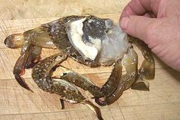

Soft Shell Crabs are most commonly Blue Crabs (due to availability and size). To grow, a crab must periodically molt its entire exoskeleton and grow a new larger one. After the molt the crab is highly vulnerable for a period of days until the new shell hardens. This is the "soft shell" crab of commerce.
More on Crabs.
In Southern California soft shell crabs are commonly served in sushi bars where they are very popular. They may also be seen in specialty seafood restaurants but not much elsewhere. Along the Southeast Coast and the Gulf Coast they are served more generally.
Soft Shell Crabs should, like any other crab, be purchased live, but in many regions they can only be had frozen. If frozen, thaw in cold running water just before cooking.

|